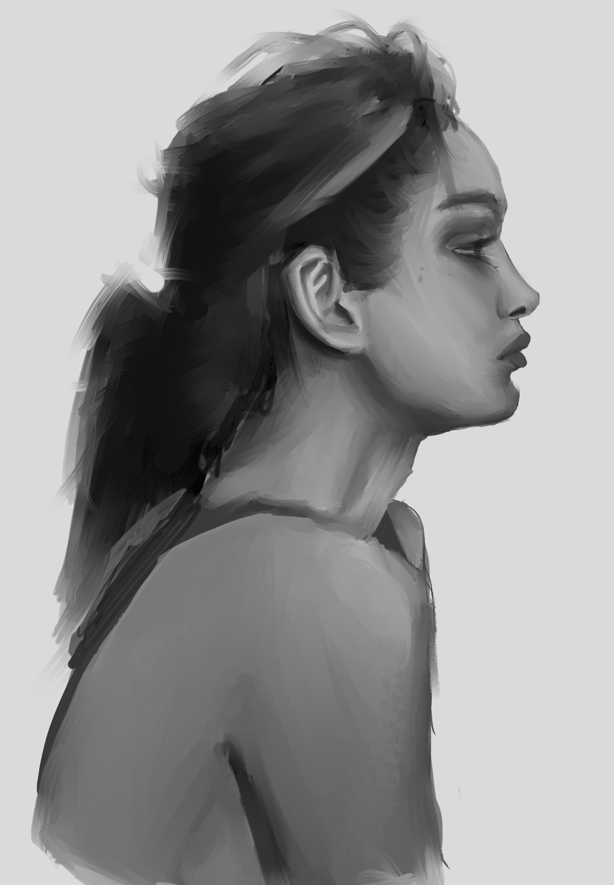

Patrick Han
About

I'm a software engineer and artist!
IG
Page Index
Art Influences
These artists have influenced the direction I want to take my art. Whether that be in style, medium, or some sort of philosophy on life/teaching. Of course, these may change one day!
- Peter Han
- Absolutely phenomenal artwork and skilset. More than that however, I enjoy his style of teaching and his takes on art education and learning in general.
- Karl Kopinski
- Awesome painting and imaginative drawing skills. Dual brush pen technique always amazes. Just seems like a genuinely great guy.
- Kim Jung Gi
- Of course you know about him. Love of his use of perspective and carefree attitude when it comes to art.
- Tom Fox
- This guy's figure drawing rocks.
- Bryce Kho
- Appealing watercolor and inking. Great composition and storytelling in his illustrations.
Other Artists I like
These are other artists whose work I really enjoy, even if it hasn't directly influenced my own work (yet).
Digital art software/hardware I use
I started off in Clip Studio Paint with an Intuos Pro Small and that was the setup I had for the longest time. I bought a Wacom Cintiq 16 a few months after that. While it was a great device, it was just way too big
for the desk setup I had at the time. I sold it shortly after and purchased an iPad Pro which is what I use now primarily.
-
Procreate (iPad Pro 4th Generation 12.9")
-
Clip Studio Paint (Wacom Intuos Pro Small)